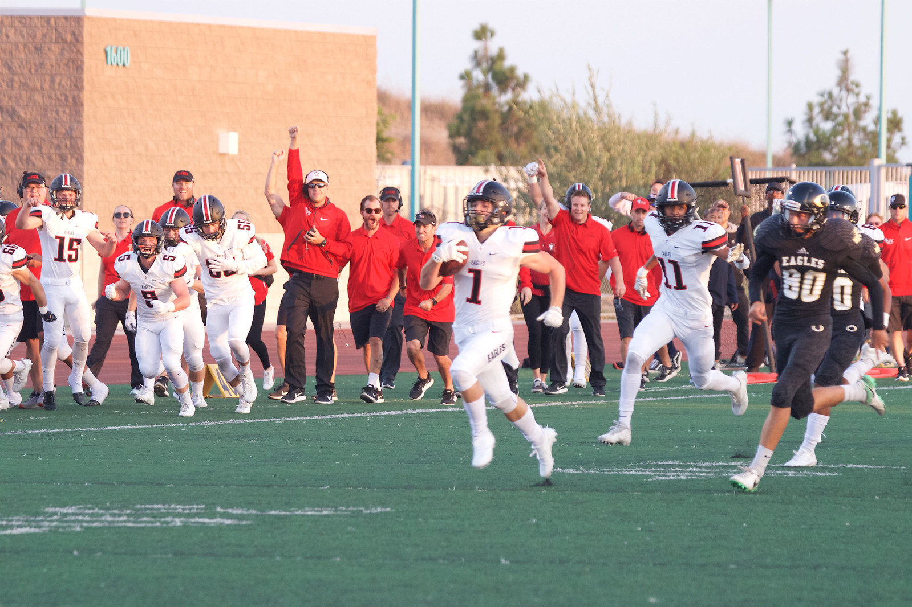
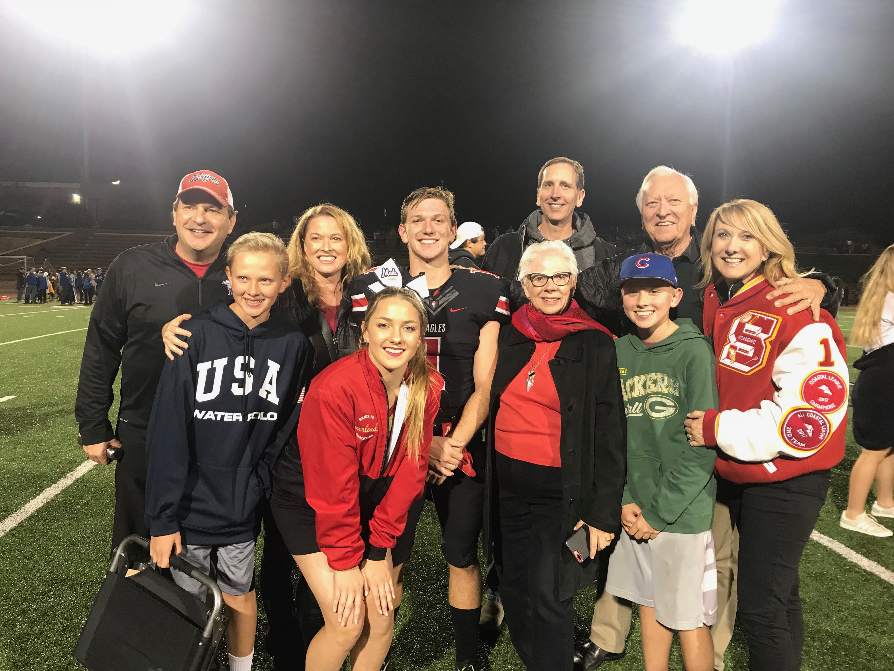

Joe is originally from San Diego, California where he attended Santa Fe Christian where he lettered in 4 varsity sports: Football, Track and Field, Lacrosse, and Academic Team. He currently attends the University of Wisconsin-Madison, where he is pursuing a bachelor's degree in Economics and plans to graduate in the spring of 2022. While he does not have a solidified plan for after graduation, he is currently pursing multiple job prospects in Tampa Bay, Chicago, San Diego and San Francisco. He is hopeful that the right opportunity will arise, and is excited for what the future holds.
 